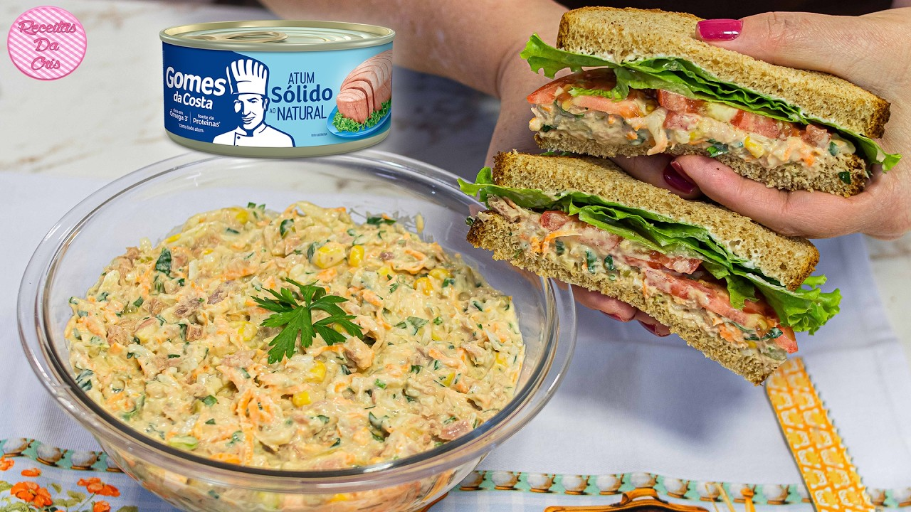

Sanduíche de Atum
Atum com maionese, cebola e limão. Zero louça e pronto em 3 minutos.
Tempo de preparo
3 minutos
Louça suja
0 louça
Porções
1 porção
Dificuldade
Fácil
Imagem da receita

Vídeo do preparo
Ingredientes
- 2 fatias de pão de forma
- 1 lata de atum em água ou óleo (170 g)
- 2 colheres de sopa de maionese
- 2 colheres de sopa de cebola picada
- Suco de meio limão
- Sal e pimenta-do-reino a gosto
Modo de preparo
- Escorra o atum e coloque direto na lata ou em um saco plástico.
- Junte a maionese, a cebola picada e o suco de limão.
- Misture com um garfo até formar uma pasta.
- Tempere com sal e pimenta-do-reino.
- Espalhe o recheio entre as duas fatias de pão e sirva.
Dica: o limão não é só sabor — ele segura o cheiro forte do atum e deixa o recheio mais fresco.